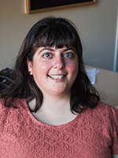
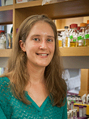
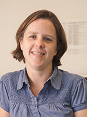
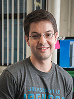

News Archives : 2013 : Introducing the Five MCB Preceptors
by Cathryn Delude
October 21, 2013
What is a preceptor?
Preceptors are full-time equivalent faculty who want to teach at the university level but may not be pursuing a full research career.
A preceptor’s role within the Department of Molecular and Cellular Biology (MCB) varies according to the courses and faculty heads they are involved with. Their common denominator is a passion for teaching and advising students. Most preceptors work as part of a large lecture course, training and mentoring students, helping to develop and execute the course, and designing innovative lab modules and course material. Many also train the graduate student teaching assistants and post-doctoral teaching fellows who help teach the course.
MCB currently has five preceptors who play essential roles in undergraduate education. They are Laura Magnotti, PhD, preceptor of the Neurobiology concentration; Julie Roden, Ph.D., preceptor of Molecular Biology (MCB52); Martin Samuels, PhD, and Rosa Veguilla, PhD, both preceptors of Life Sciences 1a (Ls1a); and Casey Roehrig, PhD, Life Sciences 1b (Ls1b) and Life and Physical Science A (LPS A).
"The preceptors are the heart and soul of our large undergraduate courses,” said Harvard College Professor Richard Losick, who is the acting Chair of the Department of Molecular and Cellular Biology (MCB). “They are both administrators who oversee course laboratories, teaching fellows, and exams and educators and mentors who play a central role in helping to ensure that our students have successful learning experiences."
Some preceptors primarily advise students in an academic concentration. Preceptors may also develop and teach their own courses and tutorials. “The department and I greatly value the work of preceptors, and we are glad to offer significant independence to help their professional development,” said Professor Venkatesh Murthy.
Preceptors enhance undergraduate education because they embrace active learning in the classroom and are dedicated to finding innovative ways of engaging students in the material, according to Professor Briana Burton. In addition, they may make long-needed updates and revisions to the laboratory component of a course and also streamline information to better highlight key concepts for students.
Many preceptors were Harvard undergraduates or graduate students, so they have a good working knowledge of the University and also understand the student perspective.
All preceptors are highly qualified. “We were extremely fortunate to have an excellent pool of applicants that included perhaps a half dozen or more candidates [for MCB52], each of whom we would have been delighted to hire,” said Burton.
Here are reflections by the five MCB preceptors about their roles and backgrounds.
 Laura Magnotti, PhD
Advisor: Neuroscience Concentration
Head Tutor: Professor Venki Murthy
Graduate school: Harvard University, PhD in Neurobiology (2010)
Advisor: David Paul, PhD
Doctoral thesis: Gap Junctions between Astrocytes and Oligodendrocytes are Critical for Normal Glial Function
Postdoctoral research at Harvard Medical School with David Cardozo, PhD, to isolate a novel source of adult neural stem cells and investigating their differentiation potential and possible therapeutic applications. (Ongoing)
"I have an undergraduate degree in Biological Basis of Behavior and History and Sociology of Science from the University of Pennsylvania. I then came to Harvard to complete a PhD in Neurobiology and never left. As a graduate student, I studied gap junctional intercellular communication between oligodendrocytes and astrocytes and its role in the formation and maintenance of myelin. Since then, I've switched gears, and I'm now working with a novel source of adult neural stem cells and trying to understand their differentiation potential and investigate possible therapeutic applications.
My job as preceptor is quite a bit different than most other preceptors, which illustrates the flexibility of the position. Instead of being part of a large lecture course, my primary responsibility is to serve as one of the two academic advisors for undergraduate students who are concentrating in Neurobiology. I think that just illustrates the flexibility of the preceptor position. The way I see it, preceptors have a passion for teaching and try to bring new energy and new ideas to the classroom in whatever capacity they're needed.
One appealing aspect of becoming a preceptor was that the title sounds like a part of the Harry Potter universe. Other than that, I was really excited by the idea of working directly with undergraduates on a daily basis. As a preceptor, the bulk of my time is spent as an academic advisor for the ~230 undergraduate Neurobiology concentrators here at Harvard. It's a really fantastic experience to watch these students as they work towards their goals and accomplish some amazing things along the way. I'm just happy that they let me along for the ride!
I have also designed and taught two courses of my own. The first was a Neurobiology tutorial (Neurobio 95hfp) called Designer Neurons: How Cell Types are Generated in the Nervous System and the Laboratory. The main goal of this course was to teach the students how to read and analyze primary literature. To accomplish this, we explored the current state of knowledge about the role of stem cells in nervous system development as well as how we can use that knowledge in the lab for therapeutic purposes. This year, I will be teaching a new course (MCB 170) called Brain Invaders: Building and Breaking Barriers in the Nervous System. In this course, the students will learn about the defense systems that the nervous system has in place to keep out invaders, ways in which various pathogens have evolved to breach those defenses, and how we can translate those mechanisms to the lab."
Outside of the classroom/lab, you can usually find me at the pottery studio, paddling on a dragon boat, or traveling around the world. I also enjoy outdoor activities (hiking, camping, etc.), reading, baking, and cheese making. The rest of my time is spent trying to survive as a Yankee fan in the middle of Red Sox territory.
Comment:
“The Neurobiology concentration advisor Ryan Draft and I are thrilled that Laura will have this dual role because she is wonderful with students as an advisor and as a teacher,” says Prof. Venkatesh Murthy, faculty head of the Neurobiology Concentration.
 Casey Roehrig, PhD,
Courses: Life Sciences 1b (Ls1b) and Life and Physical Sciences A (LPS A)
Course Head: Professor Maryellen Ruvalo
Graduate school: Harvard University, PhD in Molecular and Cellular Biology (2010)
Advisor: Craig Hunter, PhD
Doctoral thesis: Molecular and genetic analysis of developmental gene regulatory networks
"I attended New York University, where I earned a Bachelor’s degree in Biology. While there, I first became interested in developmental biology while working in the lab of Dr. Philip Benfey studying the regulation of cell growth in the roots of Arabidopsis thaliana. I then worked in the lab of Dr. Fabio Piano, studying early embryonic development in the nematode Caenorhabditis elegans and related species.
I entered the Harvard MCB department’s graduate program in 2004, and joined Dr. Craig Hunter's lab to study the development of C. elegans. My graduate work looked at the establishment and maintenance of cell fates during embryogenesis. Throughout my graduate career, I enjoyed teaching, and was involved in courses in Harvard College, the Extension School, and also with the MCB Outreach program. I enjoyed getting to work with a variety of different students as they explored their developing interest in the life sciences and encountered new ideas and experiences.
My enjoyment of teaching led me to the LS1b Preceptor position after I graduated, as its focus on genetics, genomics, and evolution mirrors my own background and interests. I enjoy developing new labs and activities that reinforce the core concepts during the discussion sections. For the past three years, I have also worked on similar projects with LPS A, which teaches the fundamentals of biology and chemistry to introductory students.
As a preceptor, I spend much of my time planning the weekly sections for LPS A and LS1b. This includes troubleshooting and refining the labs (or sometimes developing new ones), and writing problems and activities to help students learn the material. When students actively engage with the material, they are more excited to learn and also learn it better, so I try to include as many interactive and student-centered learning experiences as possible. The most rewarding part of my job, though, is working with students – I run weekly reviews for the biology portion of LPS A and for LS1b, helping students learn to apply the concepts that they hear about in lecture to different types of problems and scientific questions. I also enjoy holding office hours, which give me an opportunity to work one-on-one or with small groups of students at a time."
 Julie Roden, Ph.D.
Course: MCB52: Molecular Biology
Course heads: Professors Briana Burton and Tom Torello
Graduate school: Stanford University, Ph.D. in Biological Sciences (2006)
Advisor: Mary Beth Mudgett, PhD
Doctoral Thesis: Identification and characterization of XopN, a novel Xanthomonas campestris virulence factor
Postdoctoral research with Dr. Jane Koehler. PhD, at University of California, San Francisco on Bartonella henselae. (2006-2010)
"I am a native New Englander, born and raised in Masssachusetts. After finishing my undergraduate degree in Biochemical Sciences here at Harvard in 2000, I headed west to Stanford. My Ph.D. work, completed in the lab of Dr. Mary Beth Mudgett in 2006, focused on understanding a bacterium, Xanthomonas axonopodis pv. vesicatoria, which causes bacterial spot disease in pepper and tomato plants. After postdoctoral research studying Bartonella henselae, which causes cat scratch disease in humans, with Dr. Jane Koehler at the University of California, San Francisco, I returned to Massachusetts. I spent 3 years as a visiting professor at the College of the Holy Cross in Worcester, MA, teaching courses in introductory biology, microbiology, biochemistry, and cell biology.
I am excited to come back to Harvard to work as a preceptor for MCB 52: Molecular Biology, a course I took as an undergraduate (when it was still called BS 10). My main role in the course is to coordinate and run a discovery-based lab series in which undergraduates discover and characterize proteins that interact with the tumor suppressor protein p53. Throughout the semester, students learn standard molecular biology techniques while potentially discovering something novel about p53. We also teach students to immerse themselves in the scientific literature through reading, writing, and oral presentations. As a preceptor for this course, I train the graduate students who teach the lab sections, help to design and write assessments, and test out new experiments we are considering adding to the course in the future. I am lucky to be able to collaborate on my work in MCB 52 with Professors Briana Burton and Tom Torello, and a team of fantastic teaching fellows.
Comments:
Professor Briana Burton, who heads the foundation molecular biology course at Harvard (MCB 52) explains that preceptor Julie Roden’s responsibilities include running through the entire laboratory sequence, guiding teaching staff on how to run their discussion and laboratory sections, micro teaching with the Bok Center, and behavioral training to help teaching fellows practice dealing with common classroom situations. “In the first two weeks of the semester, Julie had already proven to be a great asset to the course. She has made some long-needed updates and revisions to the laboratory component of the course and streamlined the information for the students, allowing us to better highlight the key concepts that we want them to take away.”
 Martin Samuels, PhD
Course: Life Sciences 1a (Ls1a)
Course head: Professor Rob Lue
Graduate school: Harvard University, PhD in Biochemistry (2011)
Advisor: David Jeruzalmi, PhD
Doctoral thesis: Structural and Biochemical Studies of UvrA, the Bacterial NER DNA Damage Sensor, and the Biochemical Characterization of a Bacterial MCM
"Rosa Veguilla and I are both preceptors for Life Sciences 1a, a fall term introductory course (450ish students) that integrates biology and chemistry to teach how the concepts from each discipline can help solve some of the worlds' most pressing problems, including HIV and cancer.
As a preceptor, I help write the class's course material (problem sets, section activities, lab exercises, and exams), hold office hours and tutor students individually or in groups, and help keep the course's large teaching staff in touch and coordinated.
As an undergraduate, I went to the University of Chicago before coming to MCB for graduate school, where I used structural biology (i.e., X-ray crystallography) and biochemistry to study DNA replication and repair.
I applied to become a preceptor because I loved teaching as both a graduate student and as an undergraduate. Interacting with students is far and away the best part of my job. Helping someone to understand a concept though posing questions and asking them to draw reactions or mechanisms on a board is enormously rewarding. I'm a big fan of the
Socratic method, twisted a bit to be applicable to biochemistry."